A custom round-based multiplayer game built in Roblox featuring advanced movement mechanics, item placement, and a dynamic scoring system.
Personal Project - 2024-2026
Since I was a kid, I have always wanted to be capable of creating my own video games. I started learning programming in high school and quickly found myself drawn to game development. This led to me creating games on the Roblox platform for several years, and this project is my most ambitious one yet. I wanted to create a fun and engaging multiplayer experience that combined my love for game design with my programming skills.
Most of my learning was through failure and trial and error, as I had minimal prior experience with game development or the Roblox platform before starting to make games. It started with me aiming to high, falling subject to burnout, and then learning to scale back my ideas and focus on creating smaller, polished projects. This project was the culmination of all the lessons I had learned from my previous game development attempts, and I am proud of how it turned out.
 Visit on RobloxThe game is a round-based multiplayer experience where players compete in a variety of mini-games and challenges. The game features advanced movement mechanics, such as wall jumping and dashing, as well as interactive items that players can use to gain an advantage over their opponents. The placement and score system is inspired by the popular game "Ultimate Chicken Horse", where players earn points based on their placement in each round and can use those points to purchase items and upgrades for future rounds.
This project taught me a lot about game design and development, as well as the importance of iteration and playtesting. I learned how to create engaging gameplay mechanics and how to balance them to create a fun and challenging experience for players. I also learned how to optimize my code and use Object Oriented Programming principles to create clean and maintainable code. Overall, this project was a great learning experience for me and has inspired me to continue pursuing game development in the future.